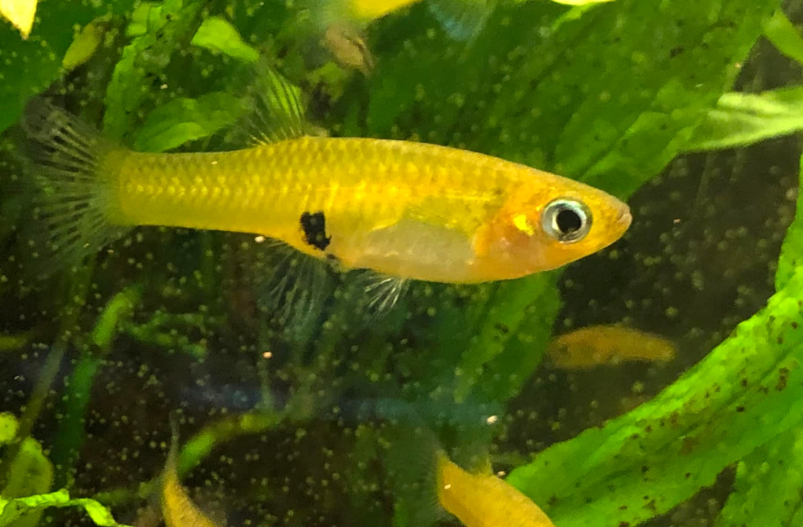

Systématique
- Ordre : Cyprinodontiformes
- Famille : Poeciliidae
- Genre : Girardinus
- Espèce : G. uninotatus

Girardinus uninotatus est un poisson vivipare endémique de Cuba, décrit par Poey en 1860. Moins connu que le Guppy, il est pourtant très apprécié des amateurs de Poeciliidés sauvages pour sa robustesse et son allure.
Le nom d'espèce uninotatus signifie "une seule marque", en référence à la tache noire bien visible sur les flancs, bien que certains individus puissent en présenter plusieurs ou aucune selon les populations. Le corps est de couleur bronze à argenté, souvent avec des reflets métalliques bleutés ou dorés assez vifs.
C'est une espèce de taille moyenne pour le genre : les mâles mesurent environ 3 à 5 cm, tandis que les femelles sont nettement plus grandes, pouvant atteindre 6 à 8 cm.
C'est un poisson grégaire, vif et pacifique. Il convient parfaitement aux bacs communautaires d'eau dure.
Très actif, il nage dans toutes les zones de l'aquarium mais apprécie particulièrement la surface et la zone médiane. Il a besoin d'espace de nage libre, contrairement à d'autres espèces plus timides qui restent cachées. Les interactions entre mâles sont fréquentes (parades) mais rarement blessantes.
Mode : vivipare.
La reproduction est aisée et typique de la famille. Le mâle féconde la femelle à l'aide de son gonopode. La gestation dure environ 4 semaines.
C'est une espèce assez prolifique : une grande femelle bien nourrie peut donner naissance à plus de 30 ou 40 alevins par portée. Les alevins sont relativement grands à la naissance et acceptent immédiatement les nauplies d'artémias ou les poudres fines.
Dimorphisme sexuel : Le mâle est beaucoup plus petit, plus svelte et possède un gonopode (nageoire anale transformée). La femelle est bien plus massive, avec une zone ventrale arrondie et une tache gravidique visible près de l'anus.
Espérance de vie : Environ 2 à 4 ans.
Il est endémique de Cuba, présent dans de nombreuses rivières, étangs et ruisseaux de l'île. Il affectionne les eaux claires à légèrement troubles, souvent courantes, riches en végétation et en algues filamenteuses. L'eau de son habitat naturel est typiquement dure et alcaline.
Répartition

Origine naturelle :
- Amérique Centrale (Caraïbes).
- Cuba (Endémique).
- Largement distribué sur l'île.
Paramètres de maintenance
Température : 22 à 28 °C.
pH : 7,0 à 8,0 (préfère les eaux basiques).
GH : 10 à 30 °dGH (eau dure nécessaire).
Volume conseillé : Minimum 80 L. En raison de la taille des femelles (jusqu'à 8 cm) et de l'activité du groupe, il nécessite plus d'espace que les petits Girardinus.
Régime alimentaire
Régime : omnivore à tendance herbivore.
Dans la nature, il consomme beaucoup d'algues et de détritus végétaux, ainsi que des insectes.
En aquarium, il est robuste mais nécessite impérativement une part végétale (spiruline, épinards pochés) pour éviter les problèmes digestifs, en plus des proies habituelles.